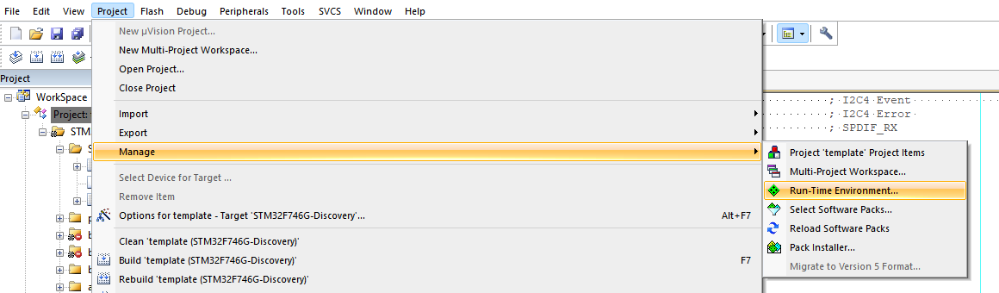
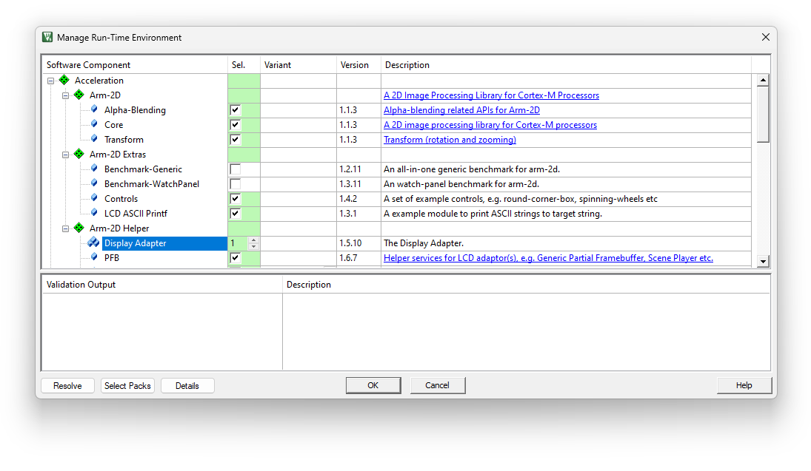
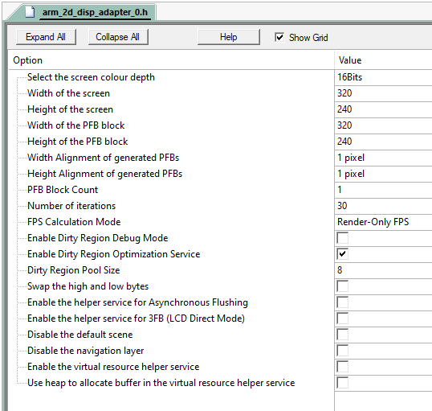
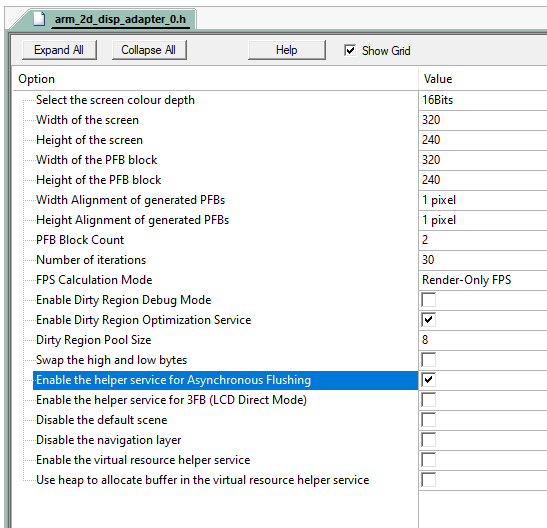

|
Arm-2D
2D Image Processing Library for Cortex-M Processors
|


|
|
Arm-2D
2D Image Processing Library for Cortex-M Processors
|
|
This document describes how to deploy the Arm-2D library to your existing MDK projects. If you are not familiar with Arm-2D, please start from the README first.
There are three methods to get Arm-2D:
Cloning Arm-2D repository on Github using the following command line:
Checking for Updates in pack-installer and installing the latest Arm-2D packs as shown in Figure 1-1 and Figure 1-2
Figure 1-1 Check for Updates in Pack Installer

Figure 1-2 Install Arm-2D in Pack Installer

Open the Run-Time Environment configuration dialog using menu "Project->Manage->Run-Time Environment" as shown in Figure 2-6.
Figure 2-6 Open Run-Time Environment Dialog 
Expand Acceleration and select Core, Alpha-Blending and Transform under Arm-2D as shown below. Make sure you also select CMSIS-CORE and CMSIS-DSP.
Figure 2-7 Select Arm-2D in RTE 
Enable C11 and GNU extension support in C/C++(AC6) configurations:
Figure 2-3 Enable "gnu11" in Arm Compiler 6

Include the header file arm_2d.h in your source code where you want to use the library:
Initialize Arm-2D by calling function arm_2d_init() :
Expand Acceleration in the project view and open arm_2d_cfg.h as shown in Figure 2-8.
Figure 2-8 Find arm_2d_cfg.h in the project view

Open the Configuration Wizard and check options available for Arm-2D
Figure 2-9 Configuration Wizard for Arm-2D

NOTE: If you want to support CCCA8888 (i.e. RGBA8888), please selet the Enable support for accessing individual colour channels.
It is easy to deploying arm-2d as a library using CMake, for details, please check the CMakeLists.txt.
It is possible to deploy arm-2d using Makefile. We supposes you familiar with writing Makefile scripts and hence provide an Makefile used on PC as a good example.
Suppose you want to develop GUI applications directly with Arm-2D. In that case, it implies that you not only use Arm-2D APIs for the framebuffer-based low-level 2D image processing but also want to display the processed result on a screen. An ordinary GUI software stack will provide a dedicated service for connecting a target screen, and users must implement a driver or adapter between the hardware and the service. Such a service usually allows people to refresh the whole screen with a petite frame buffer called partial frame buffer (PFB). This feature is vital for resource-constraint embedded platforms. Arm-2D provide a similar feature through a helper service called Display Adapter Service.
Before we start, we have to prepare a low-level flushing function called Disp0_DrawBitmap(). Its prototype is shown below:
Here as shown in Figure 3-1:
x,y are the absolute coordinates in the target screenwidth andheight describe the size of the rectangular target areabitmap points to a framebuffer which holds all pixels in a rectangular area with the given width and height.Figure 3-1 The Scheme of the Low Level Flushing Interface

Suppose the display RAM of your LCD has been mapped into internal 4G memory space. An example of Disp0_DrawBitmap() might look like this:
Here, disp_ram points to the memory space reserved for the LCD display RAM.
IMPORTANT:
Disp0_DrawBitmap(), Arm-2D assumes that the target frame buffer has already been flushed to the target screen.Disp0_DrawBitmap() functional correctness without Arm-2d before moving to the next steps.Deploying Display Adatper service in MDK is simple:
Acceleration::Arm-2D Helper1. NOTE: If you have multiple screens, please set the number accordingly.Figure 3-2 Selecting Display Adapter Service in RTE

After that, you will see two files, i.e. arm_2d_disp_adapter_0.c and arm_2d_disp_adapter_0.h have been added to the project manager under the Acceleration group.
IMPORTANT: unless necessary, please do NOT modify the content of the arm_2d_disp_adapter_0.c, as new versions of Arm-2D often introduce new features to the Display Adatper Service, as long as you haven't modified anything in the arm_2d_disp_adapter_0.c, updating to the latest version would be an easy task nothing more than right-clicking the file in the project manager and updating to the latest version in the pop-up menu.
You have to initalise the Display Adapter service before using it.
Include arm_2d_disp_adapters.h in your c source code and add the following code to the main() function:
Or the thread function if you want to run Arm-2d in an RTOS environment:
You should configure the Display Adapter service before using it. All the configurations of a Display Adapter service are stored in the corresponding header file, e.g. arm_2d_disp_adapter_0.h. In MDK, all configuration work can be done through the GUI wizard, as shown in Figure 3-3.
Figure 3-3 Configure the Display Adapter Using the Wizard

There are many options available in the list, and we only explain those important and commonly used ones here:
Table 3-1 The Important and Commonly Used Options of the Display Adapter Service
| Options | Value | Default | Description |
|---|---|---|---|
| Select the screen colour depth | 8bits/16bits/32bits | 16bits | The number of bits per pixel. For monochrome LCD and e-ink LCD, please select the 8bits. |
| Width of the screen | 8...32767 | 320 | The width of the target screen |
| Height of the screen | 8...32767 | 240 | The height of the target screen |
| Width of the PFB block | 1...32767 | 320 | The width of a partial frame buffer (PFB). If possible, please use the screen width here. |
| Height of the PFB block | 1...32767 | 240 | The height of a partial frame buffer (PFB). It is recommended to start from 1/10 of the height of the screen. If possible, do not use a value smaller than 8. |
| Width Alignment of generated PFBs | 1/2/4...128 pixels | 1 pixel | The horizontal pixel alignment of the PFBs sending to the DispN_DrawBitmap() for flushing. It is important for LCDs that have certain pixel alignment requirements. For example, 8 pixel alignment for monochrome LCDs and 4 pixel alignment for e-inks. |
| Height Alignment of generated PFBs | 1/2/4...128 pixels | 1 pixel | The vertical pixel alignment of the PFBs sending to the DispN_DrawBitmap() for flushing. It is important for LCDs that have certain pixel alignment requirements. For example, 8 pixel alignment for some 12864 monochrome LCDs. |
| PFB Block Count | 1...32767 | 1 | The number of PFB blocks in the pool. Please set it to 2 or more when using Asynchornose flushing mode; otherwise, keep it as 1. |
| Number of iterations | 0...32767 | 30 | Calculate the real-time FPS for every specified number of frames. Set it to 0 to disable the real-time FPS calculation. |
| FPS Calculation Mode | Render-Only FPS/Real FPS | Render-Only FPS | Render-Only FPS: record the time used by the renderer and use it to calculate the FPS without taking LCD latency into consideration. Real FPS: calculate the real FPS people actually see on the screen. |
| Swap the high and low bytes | Select/Unselect | Unselect | Some RGB565 LCDs require swapping the high and the low bytes for each pixel. Please ONLY enable this option when there is no hardware solution to swap the high and low bytes. |
| Enable the helper service for Asynchronous Flushing | Select/Unselect | Unselect | By selecting this option, a dedicated helper service will be provided for asynchronous flushing mode. For more, please read the guidance in the header file. |
| Disable the default Scene | Select/Unselect | Unselect | A Display Adapter brings a default scene for indicating successful porting. You can disable it by selecting this option. |
| Disable the navigation layer | Select/Unselect | Unselect | A Display Adapter uses the navigation layer (which is floating above the content created by users) to show real-time FPS and version info. You should disable it before the product releasing or disable it to add your own navigation layer. |
NOTE:
Disp0_DrawBitmap(). Don't forget to set the PFB alignment to 8 horizontally or vertically depending on the monochrome LCD pixel layout.Disp0_DrawBitmap(). Don't forget to set the PFB alignment to 4 horizontally or vertically depending on the e-ink LCD pixel layout.Disp0_DrawBitmap(). Don't forget to set the PFB alignment to 2 horizontally or vertically depending on the e-ink LCD pixel layout.Arm-2D helper service relies on an external reference timer which we should implement:
Table 3-2 The Interface for Accessing the External Timer
| Interface Prototype | Description |
|---|---|
| int64_t arm_2d_helper_get_system_timestamp(void) | a function that returns the number of ticks (timestamp) of the reference timer since reset. |
| uint32_t arm_2d_helper_get_reference_clock_frequency(void) | the frequency of the reference timer. |
We highly recommand you to install perf_counter from Pack-Installer, Keil Website or its Github repo to simplify this process. You have to initialize the perf_counter before using Arm-2D. For more, please read the guidance here.
After finished steps above, if everything goes well, you should see a screen as shown in Figure 3-4. If the colour doesn't look right and the LCD uses RGB565, try to swap the high and low bytes for each pixel.
Figure 3-4 The Look of The Default Scene In A Successful Porting

If you encounter any problems, please feel free to raise an issue.
Enjoy.
Different from the method described in section 3.1 that lets the CPU flush the LCD directly, it is possible to use DMA (or peripherals with similar capability) to offload the processor - we call it Asynchronous Flushing mode, and the method described before is often referred as Synchronous Flushing mode.
To enable Asynchronous Flushing:
Enable the helper service for Asynchronous Flushing in the Display Adapter configuration wizard, or equivalently define the macro __DISPn_CFG_ENABLE_ASYNC_FLUSHING__ as 1 (here n represents the display adapter index number).__disp_adapterN_request_async_flushing()(here N represents the display adapter index number). The function prototype is shown as below: disp_adapterN_insert_async_flushing_complete_event_handler() to report the event to the display adapter service (here N represents the display adapter index number).NOTE: If the device connects LCD via SPI, when using DMA for transaction, please handle the CS signal properly. Usually, we set the CS to low before sending the DMA transaction request in
__disp_adapterN_request_async_flushing()and raise CS to high in the DMA transaction complete interrupt service routine (ISR).
PFB Block Count to 2 (or even 3) in the configuration wizard, or equivalently define the macro __DISPn_CFG_PFB_HEAP_SIZE__ as 2 (or even 3), here n represents the display adapter index number. A typical configuration is shown in Figure 3-5.Figure 3-5 A Typical Configuration for Enabling Asynchronous Flushing Mode in the Wizard.

It is worth to note that in Asynchronous Flushing mode, because the LCD Flushing parallels with the new FPB drawing:
0ms, otherwiseTo avoid the tearing effects, some devices provide a dedicated LCD controller peripheral, often known as LTDC. The LCD controller maps a FULL framebuffer as the display RAM and copies the content in the display RAM to the LCD in a fixed frequency. During this period, there is a time-window indicated by a signal often known as TE or VSYNC, as long as we can finish flushing the LCD in this time-window, the tearing problem can be avoided.
Direct mode is such a mode that exchanges the FULL framebuffer as the display RAM on VSYNC or TE events. Arm-2D supports the Direct Mode through a dedicated helper service.
To enable the 3FB helper service:
Enable the helper service for 3FB (LCD Direct Mode) in the Display Adapter Configuration Wizard, or equivalently define the macro __DISPn_CFG_ENABLE_3FB_HELPER_SERVICE__ as 1 (here n represents the display adapter index number).uintptr_t variables to indicate the address of three FULL-Framebuffer:NOTE:
- Here n represents the display adapter index number.
- The three variables should be initialized with the proper value before initialization of the corresponding display adapter service.
disp_adapterN_3fb_get_flush_pointer() to get a framebuffer pointer and use it to update the LTDC. (Here N represent the display adapter index number)In fact, the Direct Mode can be used together with the Asynchronous Flushing mode. If the two modes are enabled at the same time, users have to implement the following functions:
In DMA transaction complete event handler, please call the corresponding function to report the completion of the transaction:
NOTE: Here, N and n represents the display adapter index number.
Table 3-1 Summary
| Projects | Description | Folder | Note |
|---|---|---|---|
| [template][bare-metal] | It is a project template for the bare-metal environment. | examples/[template][bare-metal] | |
| [template][cmsis-rtos2] | It is a project template for the RTOS environment, which use CMSIS-RTOS2 as an example to show how Arm-2D can work with an RTOS. | examples/[template][cmsis-rtos2] | |
| [template][pc][vscode] | It is a project template for PC (i.e. MacOS, Windows and Linux) using VS Code + SDL2 | examples/[template][pc][vscode] |